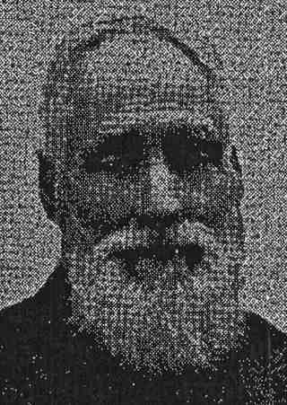

Allan, Annie Cairns
| Birth Name | Allan, Annie Cairns | |
| Gender | female | |
| Relationship | great grandaunt | |
| Common Ancestor | Allan, Archibald Parkes (Park) |  |
Events
| Birth | Annie Cairns Allan, 1853 at Northcote (Fitzroy), Victoria, Australia |
| Residence | Annie Cairns Allan, before 12 February 1874 at Northcote, Victoria, Australia |
| Occupation | home duties, before 1903 |
| Electoral Enrolment | Annie Cairns Allan, 1903 at 70 Bennett Street, Fitzroy North, Victoria, Australia |
| Occupation | home duties, before 1909 |
| Electoral Enrolment | Annie Cairns Allan, 1909 at 70 Bennett Street, Fitzroy North, Victoria, Australia |
| Occupation | home duties, before 1914 |
| Electoral Enrolment | Annie Cairns Allan, 1914 at 70 Bennett Street, Fitzroy North, Victoria, Australia |
| Cause Of Death | Generalised turberculosis and rheumatoid arthritis, heart failure. Ill for 21 years, 12 October 1916 |
| Residence | Annie Cairns Allan, before 22 October 1916 at Fitzroy, Victoria, Australia |
| Death | Annie Cairns Allan, 22 October 1916 at 70 Bennett Street, Fitzroy North, Victoria, Australia |
| Burial | Annie Cairns Allan, 23 October 1916 at Melbourne General Cemetery, College Crs, Parkville, Victoria, Australia |